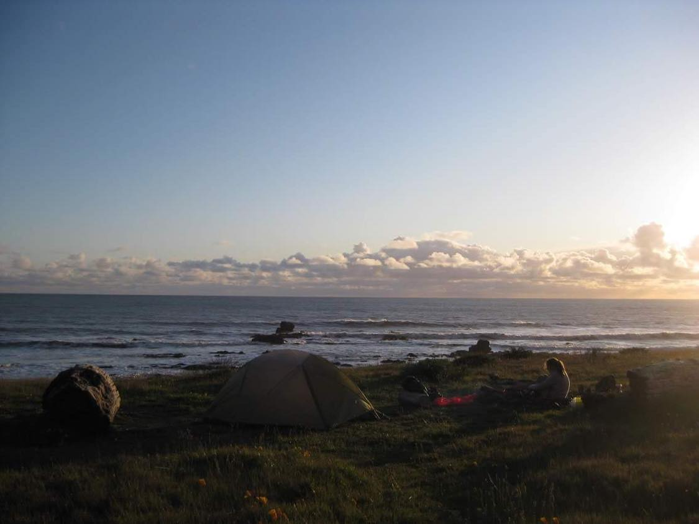
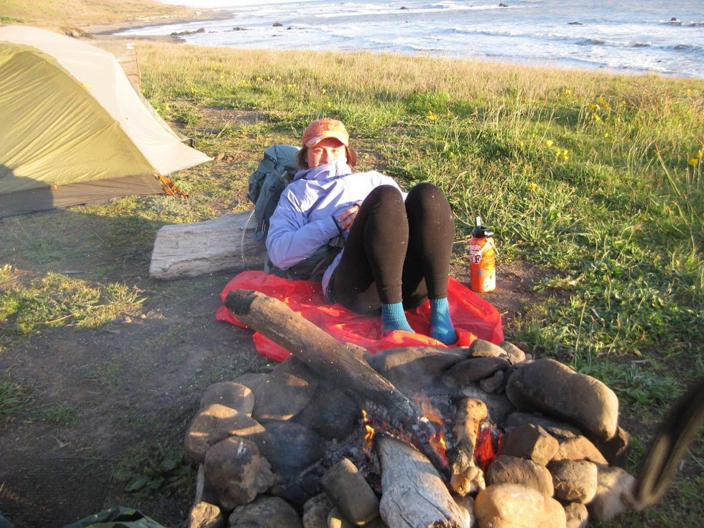

CALIFORNIA: JEFFERSON SECTION

The Jefferson Section is located in Nothern California and offers a wide variety of coastal trails to luscious forests.
Lost Coast and Trinity Alps are two great options for a weekend backpacking get away!
Feel free to check out the blurbs about the two trips and see if this is a trip for you :)
LOST COAST: MATTOLE TO BLACKSANDS BEACH
Level: Moderate ~ 25 miles
Location: King Range Wilderness

This trail stretches along California's most secluded and underdeveloped coast. I did this trip during Spring Break 2020 with my old Girl Scout friend. We started from Black Sands end and did the whole trail there and back, total of 50 miles, within 4 days. We had a great time, considering we were really the only backpackers on the trail due to it being the start of the pandemic.
LOST COAST ITINERARY
DAY 1 ~ Black Sands Beach to Big Flat, which was about 7.5 miles. Big Flat is a great camping spot right next to a small beach access point. Something to watch out for is the tides. We learned this the hard way :( Be sure to know the tidal schedule during the time you are going. You don't want to get caught on the beach during high tide.

DAY 2 ~ Big Flat to Punta Gorda Lighthouse, 14.2 miles. This day was very tough, but luckly we were right next to the beach so we went for a dip in the ocean during our lunch break to cool off. I would say this was probably one of more difficult backpacking days. Hiking across infinte sandy coast can be a breathtaking sight, but it also drains you so quicky!
DAY 3 ~ Punta Gorda Lighthouse to Cooskie Creek, 8.2 miles. Throughout the whole day it was raining on and off so make sure to pack a poncho that covers both you and your pack. Once we reached Cooskie Creek the skies finally cleared and we had an amazing bonfire in a field of spring flowers next to the beach. Night 3 was my favorite Lost Coast campsite :)
DAY 4 ~ Cooskie Creek to Black Sands Beach, 19 miles. This was literally the home stretch, so we just pushed ourselves back to Black Sands Beach. We started at sunrise, which you can see a glimpse of the view from the rocky trail next to the ocean. There is no need to worry about bears on this trip, but we did hear a pack of wolves howling as we started before sunrise. Make sure to always keep an eye out for wildlife!
Lost Coast is my top trip by far, and I 100% recommend it to experienced backpackers!!
TRINITY ALPS: EMERALD AND SAPPHIRE LAKES
Level: Moderate ~ 30 miles
Location: Trinity Alps Wilderness
Located deep in the Trinity Alps, this backpacking trip seriously gave me a reality check about bear safety! This is a great trip to do on a normal weekend, and can be done within 2 days. I did this trail in May 2020 with my boyfriend when we first started dating. Going a backpacking trip is always a great way to get to know someone :)
TRINITY ALPS ITINERARY
DAY 1 ~ Trailhead to Sapphire Lake, 15 miles. The first half of this day was mostly spent backpacking through thick forest and alongside a loud river. Once we reached mile 9 there was a huge meadow (the pano picture on the top) and we breaked for lunch to
take in the vibrant green colors. But sadly after lunch it was a tough uphill terrain, so don't eat too much during your break.
We first hiked by Emerald Lake which is also a great spot to camp, but we decided to spend the night at Sapphire Lake. Once we made it to the lake we were super exhausted and sweaty so we went for a VERY quick dip in the glacier water! I also had some googles in my backpack ;)
DAY 2 ~ Sapphire to Trailhead, 15 miles. We start the day off with a hammocking session over the Sapphire. The hike back was mostly downhill, but due to our bad luck it started to pour and we had to set up shelter quickly. In the heat of the moment we forgot to pack the leftover food and just ran into the tent to stay dry. After a few hours of hanging out in the tent, we heard footsteps... bears. 3 big black bears ate our food and decided to hang out around our tent for the entire night.
Just a reminder to always properly pack your food in a bearbox when backpacking! But if you are looking for a 2-3 days weekend trip this is the trail for you.
Back to Home